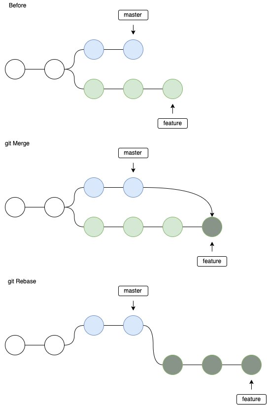
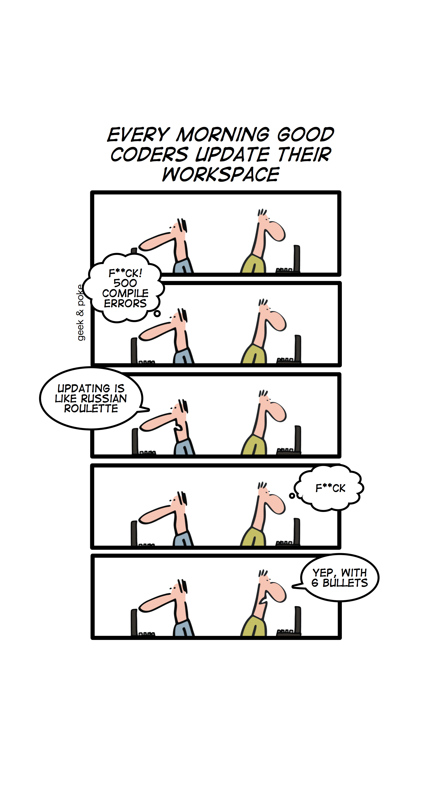
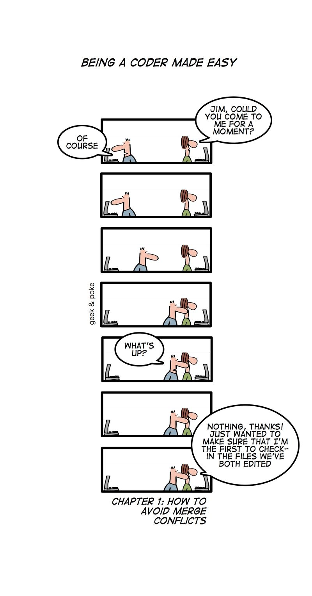

branching strategy selector, part #1 (basic concepts)
objective
Help YOU & your TEAM
CHOOSE for your project
a proper:
(git?) workflow &
branching strategy
HEY WAIT! what’s this flow/BS stuff?
is this a self-help therapy?
do I really need a BS?
can’t I do without? (as usual)
how much does this cost?
what do I get/avoid in return?
about this work
part of my ERNI (career path) masterpiece
something I wanted to know about
performed guided search & read
this presentation +
… detailed, in-depth document
… annotated bibliography
… BS selector tools
about me @ERNI
joined ERNI as senior 4+ years ago
worked for HP ever since
printer FW developer (C++, linux)
HP multiplatform library (C++)
HP common platform developer (DUNE)
about me with VCSs (Version Control Systems)
always been interested in VCSs, even when not available (no internet)
happy to discover SCCS (GUI in sun’s solaris), disgusted about Microsoft’s SS
very happy when found out about SVN (unlike Linus Torvalds)
lucky to have never used CVS (worse than its simple predecessor RCS)
DVCSs: tried Ubuntu’s bzr (bazaar), though never tried mercurial (hg)
tried git in the beginning, didn’t understand anything
tried git again when hype, and liked it so much, started to use it over SVN
using git officially only since May 2021
about me with VCSs #2
2005: convinced management (and colleagues) at my former company to:
use SVN, and …
replace existing inferior solutions
despite not being a salesman (quite the opposite)
target audience
managers (have the last word)
product owners
SW architects
project managers
agile masters?
NOT FOR devops engineers (know more than me :) !)
… and developers
objective:
showcase ERNI-services’s BS selector
provide beginner level knowledge about BS & gWF and underlying, related concepts
understand why they are (or not) useful
help you decide if you need one (or not!), and the MOST suited
decide with awareness (not blindly or with inertia / prejudice)
humbly provide tips on using VCSs and BSs (I am sure you know or heard of most of the covered topics)
contents (general) (part #1, this session)
… only at introductory level (devops engineers know more than me!)
definition of branching pattern, branching strategy, git workflow
benefits (& costs) of gWF & BS
basic concepts, featuring merge conflicts (solving vs minimizing)
list of branching patterns
list of branching strategies
contents, concepts determining which BS to choose (in part #2, next session)
about integration of developers work
about BS strategy
related to deployment & releasing
CI/CD (devops only?)
testing & - error tolerance
etc … (some contents are self-provided)
git workflows & branching strategies / patterns
abbreviations
BS: Branching Strategy
gWF: (git) WorkFlow – not only with git!
VCS: Version Control System (like svn, git, …)
D-VCS / DVCS: Distributed VCS (git, hg, bzr, …)
PR: pull request
about workflows and strategies
a branching strategy (BS)
… is part of a (git) workflow
… the most important one
branching patterns / branching strategies
a branching pattern is a way of sharing/integrating developer changes
a branching pattern is a way of managing the path to production / deployment
a branching strategy is a set of branching patterns (maybe only 1)
git workflows and strategies
conventions between developers
rules to store, branch, merge changes
rules to publish and deploy …
conventions may feel arbitrary, inappropiate …
benefits & costs of gWF & BS
now seriously, do I need one?
are these BS just hype?
you may not (who knows)
will most probably be useful
… and will save time & money
be careful! choosing the wrong one
… will be painful
git log chaos
benefits (1)
developers do things the same way
get rid of inconsistent practices
avoid ill-defined workflows
have a clean & sound log history (hygiene)
no spaghetti-like / chaotic history
benefits (2)
optimize productivity
enable parallel development
allow planned, structured releases
have a clear path for SW changes through production
benefits (merging-related)
avoid / minimize amount of merge conflicts
minimize conflicts complexity
reduce time when publishing
benefits (general)
having a proper branching strategy
=> save 20%-40% in developer time
choose a proper one
in less than 1 hour
(with this work)
Source: our own survey (mostly between ERNI developers)
cost
more ceremony/bureaucracy for some operations (maybe)
integration / release manager may be required (if none already)
may need to train / educate developers
developers may need some time to be adapt to it
git training
even if people use layers above git (github/bitbucket/gitlab, Teams Foundation Server, gitflow plugins …), it’s convenient that the team is decently trained on raw git usage for the basic operations (pull, fetch, push, reset, merge, rebase, reflog, etc)
git training (join)
basic concepts
what is a commit?
commits have different meanings / actions depending on the VCS
in SVN: store + share + publish
in git: store only
git encourages committing often / svn not
quote by Seth Robertson: “Commit Often, Perfect Later, Publish Once”
what is a branch?
different VCSs have different meanings or uses for a branch
humans think of a branch as in a tree (bifurcation)
in svn, a branch copies (cheaply) the files
in git, a branch is simply a label of a history you don’t want to lose, but it is not required to explicitly use them
here, we’ll use the human meaning
(join)
branching is easy, but …
in all VCSs, branching is easy
integrating is the tough part
in SVN, merging is not really efficient (design limitation)
branching increases the complexity of your repository (Leroy principle)
(join)
merge vs rebase vs cherry-pick
Reminder of these 2 ways of integrating changes.
merge: join 2 branches with a new commit
rebase: moves changes (replays) on a different base point from base branch
cherry-pick: picks only 1 commit from 1 branch to another - may introduce conflicts (git cherry command may detect them)
(join)

merge conflicts
sounds familiar?
sounds familiar?
in SVN you can’t even commit if somebody has modified the same file (in a different place)
in GIT you can’t push without fetch/pull in the same branch
so first you have to update/pull …
and then, you may have the most feared enemy of team development: merge conflicts
let’s have a survey
how often / when do you update/pull?
how often / when do you commit/backup?
how often / when do you share/publish (push)?
answers on average - like every week / day / twice a day / 1-2 hours / several times an hour
updating too frequently?
updating frequently helps reduce the complexity of merge conflicts
but … you get unexpected / potentially dangerous changes (not about build)
lose the isolation of your feature branch development (unless some change is desired)
(join)

probability of merge conflicts
depends on:
integration frequency
codebase size
location / distribution of tasks in the code
integration frequency
difficult to quantificate (what does frequent mean in terms of time?)
how often shall we integrate changes?
how many developers in the team? are there subteams?
depends on several factors, like delay before commit (code review, validation, …)
codebase size
size of your changes
size of codebase
ratio changes/codebase => merge conflict probability
few changes compensate a low integration frequency
distribution of tasks in the code
avoid (complex) merge conflicts, no matter how often integration is done or how large the codebase is by:
try to be smart distributing the tasks
make developers work on different locations (i.e. on a new feature / module)
have the release manager (or the self-managed team) ensure people do not work on the same module / files
types of merge conflicts
simple textual conflict
painful textual conflict : many changes, impossible to process by diff viewers
semantic conflict (NOT DETECTED - it builds!) : VERY DANGEROUS - example: rename method, other dev adds call to old method name
(join)
avoid banal merge conflicts
reduce conflict occurrences and complexity by:
enforce style before reviewing changes, so later on colleagues don’t feel tempted to make unrelated changes fixing them
write tidy code: EOL whitespace, indentation, TAB/blanks consistency, fileformat (DOS/unix), … there are tools for that
don’t fix other colleagues unrelated changes => do that on a specific commit / also reducing code smells with tools like sonarqube
zero conflicts trick (“only for you my friend”)

minimize merge conflicts
commit/publish first the smallest / simplest change (less probability of hard to solve merge conflicts)
the zero conflicts trick should be intentionally avoided at all costs, may cause conflict panic
high-tech & revolutionary trick: use your soft skills and communicate (TALK!): before the commit, but also before developing the change
use peer review to keep colleagues informed on what you have done (not only for reviewing the code)
use agile meetings to inform / get informed about possible conflicts
use the proper branching pattern accordingly
branching patterns (integration)
Most relevant branching patterns related to integration (sharing developers work):
mainline
feature branch
continuous integration
collaboration branch
experimental / future branch
squash & merge (or rebase)
mainline integration
no branches
very simple
everybody has used it some time
in practice, it does not exist (every single sandbox is a branch by itself)
feature branch
parallel, isolated development for a new feature
variants: allow or not to update from main branch (usually not)
variant: allow or not to break tests or even builds
not a hotfix branch (later)
develop branch
an integration branch to integrate all work before the mainline
helps keep a healthy mainline
adds complexity
used by git-flow and other complex BS
continuous integration
highly collaborative
simulates developers are working on the same set of files / folders
share / integrate continuously, any non build-breaking change
reduces probability of merge conflicts, specially the tough ones
variant: agree on being able to share code that breaks tests (even builds!)
team-integration branch
allows a sub-team to integrate its changes before integrating with mainline
provides a coherent and low-noise task delivery
collaboration branch
useful for scoped continuous integration (share continously without disturbing the whole team)
isolation from/to outer world when sharing on a sub-team (feature)
experimental / future branch
branches that have no expectation of early release
“future” may mean “very experimental”, or for a far future
does not create noise on mainline while doing extreme refactoring
integration may be tough
squash & merge / rebase
recent approach
squash all commits into 1 before integrating into the mainline
dramatically reduces / avoids log history chaos
provides a clean (but isolated) mainline, but loses full history (partial commits & branch origin)
also possible with rebase instead of merge (thus becoming a cherry-pick)
popular and possible with the PRs of github, bitbucket, etc
(join)
(join)
branching patterns (releasing)
Most relevant branching patterns related to releasing
hotfix branch
release branch
maturity/stable branch
release train, future / cascaded trains
release-ready mainline
hotfix branch
similar to feature branch (but triggered by users / testers)
departs from production code, not mainline / develop
is expected to be closed quickly ASAP
release branch
a branch devoted to increase stability on a given product features
does not accept cool and new features, only bugfixes
may cause merge conflicts when porting fixes to mainline (diverged?)
maturity/stable branch
branch (or tag) with stable code (answers the what is your latest stable release? question)
to be given to testers, beta-testers, or install in production
also as a stable point for developing new features without unexpected bugs
release train, future / cascaded trains
commitment to release in fixed slots of time from the healthy mainline
aims at not delaying too much releasing of new features
its changes are also applied to the mainline (hopefully with automerge)
there may be several cascaded trains (April train, June train, …), the latest one (June) feeding to the previous one (April), etc and the mainline
release-ready mainline
commitment to always have a healthy mainline, ready for production/deployment at any time
works better with an integration buffer below it (a develop/integration branch)
THE.BEST.ONE
what is the best one?
some people just want to use the same BS always
some people think a given BS is the best one, and suits all kind of projects
so … it depends! the ERNI BS selector comes in handy
Martin Fowler’s opinion
(I have quoted from his web page https://martinfowler.com/articles/branching-patterns.html)
most influential developers (chief scientist at thoughtworks)
book author (UML, refactoring, agile, …) and board member of agile technologies
advocated XP (eXtreme Programming) in the late ’90s together with Kent Beck
he strongly recommends to use Continous Integration (simulate working on same set of files, sharing work / integrating very often) - reason: minimize merge conflicts
I beg to humbly disagree with him: have used it only some times, depending on development phase
when developing in feature branch, one does not want the noise caused by other colleagues work
my opinion
play as a team, being always consistent, without anarchy
start with something simple (use ERNI’s BS selector)
analyze if it works well, and if not, why
be flexible: feel free to adapt / change if required (all together)
conclusion
(define,) agree & use a branching strategy
choose the proper one with awareness
if no time (or want to double check) use ERNI’s selector
be open & ready to change / adapt
to minimize merge conflicts, use agile (daily) meetings to inform of upcoming refactors & commits
thanks
Martin Fowler, for the branching patterns online article
Oliver Widder, for the geek & poke cartoons
Juan Carlos Arco (ERNI Barcelona), my mentor, for endless help and lots, lots of patience with me
Alberto Martin Casado (ERNI Madrid), for providing knowledge and guidance, allowing me to learn about this
David Carmona (ERNI Barcelona), for technical help broadcasting